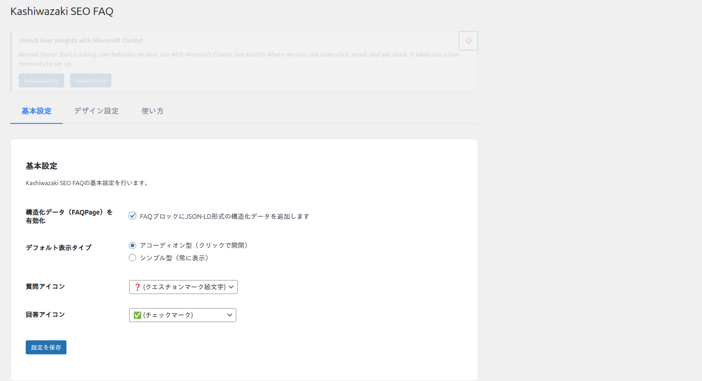
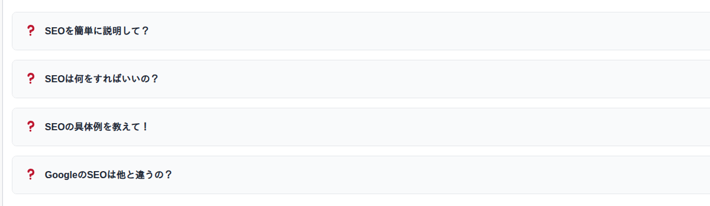

FAQブロックの使い方
ブロックエディタ（Gutenberg）でFAQブロックを挿入し、質問と回答を入力する方法を説明します。アコーディオン表示とシンプル表示の切り替えや、構造化データの自動出力について解説します。
FAQブロックの挿入

フロントエンド表示例

投稿または固定ページの編集画面を開き、ブロック挿入ボタン（+）をクリックします。
検索ボックスに「FAQ」と入力し、「Kashiwazaki SEO FAQ」ブロックを選択します。
FAQブロックが挿入されたら、質問（Q）と回答（A）のフィールドにテキストを入力します。
質問・回答のペアを追加するには、ブロック内の「項目を追加」ボタンをクリックします。必要な数だけQ&Aペアを追加できます。
ヒント
1ページに複数のFAQブロックを配置できます。すべてのFAQブロックの内容が1つのFAQPage構造化データとして統合されます。
表示モードの切り替え
FAQブロックには2つの表示モードがあります。ブロックのサイドバー設定パネルから切り替えられます。
| 表示モード | 説明 |
|---|---|
| アコーディオン | 質問をクリックすると回答が展開・折りたたまれます。FAQ数が多い場合に適しています |
| シンプル | すべての質問と回答が常に表示されます。FAQ数が少ない場合に適しています |
補足
アコーディオンの開閉処理はフロントエンドJS（1.6KB）で実行されます。外部ライブラリやAJAX通信は使用しません。
構造化データ（FAQPage JSON-LD）
FAQブロックが含まれるページを公開すると、wp_footerアクションで自動的にFAQPageスキーマ（JSON-LD形式）が出力されます。
出力される構造化データの例
<script type="application/ld+json">
{
"@context": "https://schema.org",
"@type": "FAQPage",
"mainEntity": [
{
"@type": "Question",
"name": "質問テキスト",
"acceptedAnswer": {
"@type": "Answer",
"text": "回答テキスト"
}
}
]
}
</script>SEOへの効果
FAQPageスキーマにより、Google検索結果にFAQリッチリザルトとして表示される可能性があります。また、AI検索エンジン（GEO）がQ&Aペアを構造化データから直接抽出し、回答に利用できます。
デザインのカスタマイズ
管理画面の設定ページ（SEO FAQ）でFAQブロックの見た目をカスタマイズできます。
| カスタマイズ項目 | 説明 |
|---|---|
| 質問アイコン | 質問の先頭に表示されるアイコン文字を変更できます |
| 回答アイコン | 回答の先頭に表示されるアイコン文字を変更できます |
| アイコン色 | 質問・回答それぞれのアイコン色を指定できます |
| フォントサイズ | 質問・回答テキストのフォントサイズを調整できます |
注意
デザイン設定の変更にはmanage_options権限（管理者）が必要です。編集者以下の権限ではFAQブロックの使用は可能ですが、デザイン設定の変更はできません。
フロントエンドのファイルサイズ
| ファイル | サイズ |
|---|---|
| フロントエンドCSS | 3.2KB |
| フロントエンドJS | 1.6KB |
| ブロックエディタJS | 7.2KB（管理画面のみ読み込み） |